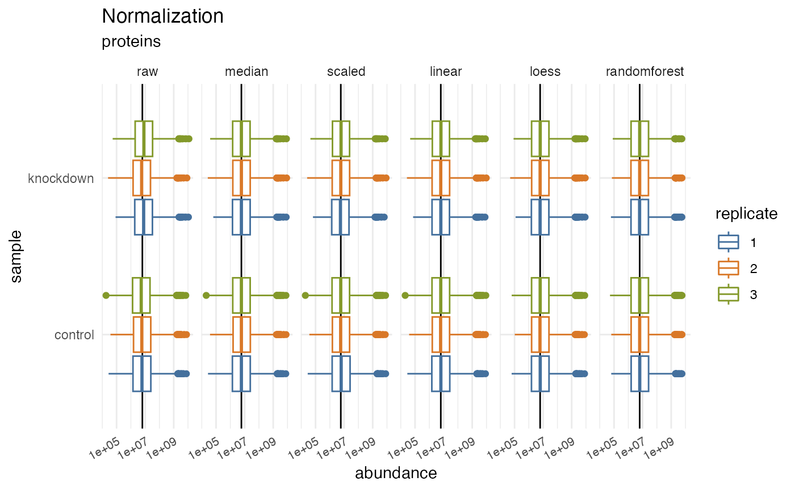
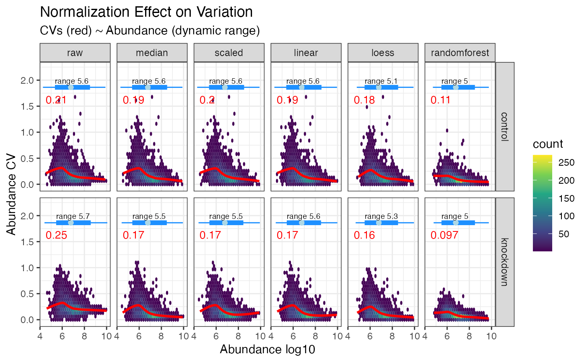

Visualizing
visualizing.RmdPre Normalization
Critical to any processing pipeline is the ability to summarize and
visualize data, both pre and post processing. Tidyproteomics covers this
well with both a summary() function and several
plot_() functions. The summary function (described in more
detail vignette("summarizing")) utilizes the same syntax
inherent to subset() to generate summary statistics on any
variable set, including all annotated and accounting terms.
Post Normalization
Visualizing data post processing is an important aspect of data
analysis and great care is taken to explore the data post normalization
with a variety of plot functions. Each of these are intended to display
graphs that should lend insights such as the quantitative dynamic ranges
pre and post normalizations plot_normalization(), the
sample specific CVs, dynamic grange plot_variation_cv() and
principal component variation plot_variation_pca() for each
normalization.
library("dplyr")
library("tidyproteomics")
rdata <- hela_proteins %>% normalize(.method = c("scaled", "median", "linear", "loess", "randomforest"))
rdata %>% plot_normalization()
#> Warning: Removed 73038 rows containing non-finite values
#> (`stat_boxplot()`).
Variation
Coefficient of Variation and Dynamic Range
The statistical assessment often referred to as CVs (Coefficient of Variation) or RSD (Relative Standard Deviation) attempts to measure the dispersion in a measurement. CVs in proteomics is plural because we often measure hundreds or thousands of proteins simultaneously. Understanding that variability and the effects of normalization will help improve the accuracy of your experiments.
rdata %>% plot_variation_cv()
#> TableGrob (2 x 2) "arrange": 3 grobs
#> z cells name grob
#> 1 1 (2-2,1-1) arrange gtable[layout]
#> 2 2 (2-2,2-2) arrange gtable[layout]
#> 3 3 (1-1,1-2) arrange text[GRID.text.754]Principal Component Analysis
This is a plot of the accumulative variation explained by each of the principal components. Ideally, normalization show improve the first few principal components, removing the measurement and instrument variability, exposing the underlying biological variability. This plot show help visuallize that.
rdata %>% plot_variation_pca()Dynamic Range
Perhaps more intriguing is the plot in
plot_dynamic_range() which shows a density heat map of
sample specific CVs in relation to quantitative abundance. This plot
highlights how CVs increase at the lower quantitative range and, more
importantly, how each normalization method can address these large
variances. Again, note how random forest normalization is best able to
minimize the CVs at the lower quantitative range.
rdata %>% plot_dynamic_range()
Clustering
Once normalization and imputation methods have been implemented and
selected it is often desired to visualize the unbiased clustering of
samples. This can be accomplished with the plot_heatmap()
and plot_pca() functions to generate plots.
Heatmap
rdata %>% plot_heatmap()